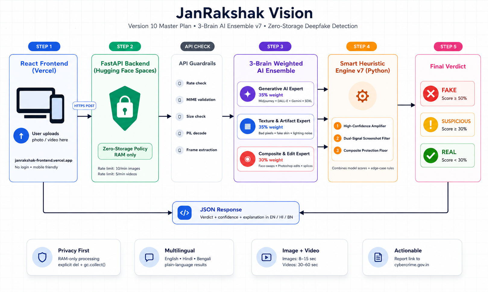

System Architecture & Heuristic Engine Guide (v7)
This document explains the technical architecture of the JanRakshak Vision platform. The diagram below illustrates the end-to-end flow from the React Frontend to the Python Hugging Face Backend.

JanRakshak Vision does not rely on a single AI model. Deepfakes are too complex for that. We use a Weighted Multi-Model Ensemble running in parallel, combined with a custom Smart Heuristic Engine to achieve 90%+ accuracy.
Weight: 35%
Specifically trained to detect modern generative AI tools like Midjourney v6, DALL-E 3, and Stable Diffusion XL.
Weight: 35%
Analyzes pixel-level anomalies, artificial skin textures, and lighting inconsistencies invisible to the human eye.
Weight: 30%
Specialized in detecting Photoshop manipulations, face-swaps, and composite images (e.g., placing a fake face on a real body).
Instead of just averaging the scores, our algorithmic Python engine applies advanced logic to catch edge cases:
SUSPICIOUS, ensuring dangerous edits are never marked as safe.PIL to analyze pixel variance and unique color counts. If an image lacks photographic noise (e.g., a UI screenshot), the engine safely dampens the fake score.Privacy is our core feature. When a user uploads an image, it is sent to the Vercel-hosted React frontend. From there, it is streamed directly to our Hugging Face Inference API. The image is processed entirely in RAM (memory).
No images are ever saved to a disk, database, or logging server. Once the inference is complete, the memory is instantly cleared.